Guia completo de implantação
A Boa Vista solicitou visibilidade em tempo real do consumo do GitHub Copilot pelos desenvolvedores, cobrindo quatro pilares:
Esta solução implanta um pipeline OpenTelemetry nativo que captura, em tempo real, todas as interações dos devs com o Copilot Chat no VS Code, envia para o Dynatrace, e disponibiliza os dados na app nativa AI & LLM Observability — sem que nenhum dev precise fazer configuração manual.
Durante a construção desta POC, com apenas uma máquina (a do consultor Dynatrace) emitindo telemetria, capturamos os seguintes dados em 24 horas:
claude-opus-4.7 em 24h — uma única máquina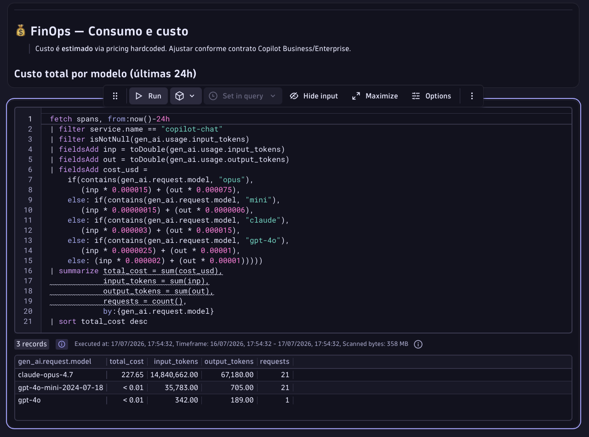
claude-opus-4.7 respondeu por US$ 227,65 em 21 chamadas; sub-agents em gpt-4o-mini serviram 21 tarefas auxiliares por menos de US$ 0,01.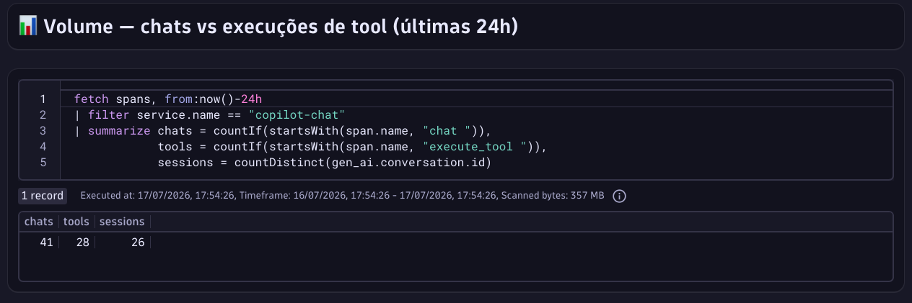
| Componente | Papel | Onde roda | Responsável |
|---|---|---|---|
| VS Code + Copilot Chat | Emite spans/metrics OTel de cada chat, tool call, sub-agent | Máquina de cada dev | GitHub Copilot (nativo, GA jul/2026) |
| managed-settings.json | Ativa e configura OTel em todos os VS Codes automaticamente | Repo .github-private no GHEC |
Admin GitHub da Boa Vista |
| OTel Collector | Recebe telemetria dos devs, adiciona autenticação, forwarda | 1 VM/container na rede da Boa Vista | Plataforma / SRE da Boa Vista |
| Dynatrace AI Observability | Armazena no Grail, detecta automaticamente serviços LLM | SaaS — tenant fov31014 |
Admin Dynatrace da Boa Vista |
github.copilot.chat.otel.enabled=true via managed policyinvoke_agent → N × chat → N × execute_tool)Authorization: Api-Token dt0c01.xxx e forwarda via HTTPS para o Dynatracecopilot-chat| Item | Requisito |
|---|---|
| GitHub Copilot | Copilot Business ($19/dev/mês) ou Copilot Enterprise ($39/dev/mês). Plano Individual não suporta managed settings. |
| GitHub Enterprise Cloud (GHEC) | Necessário para publicar o managed-settings.json via server-managed. Alternativa: file-based via MDM ou Ansible. |
| Dynatrace | Tenant com AI & LLM Observability habilitado (padrão em SaaS moderno). Tenant atual: fov31014. |
| Item | Requisito |
|---|---|
| Host do collector | VM Linux (Ubuntu 22.04, RHEL 9, Amazon Linux 2023) ou pod Kubernetes Recursos: 2 vCPU / 2 GB RAM / 10 GB disco |
| Runtime | Docker, Podman ou containerd |
| Firewall — ingresso | Porta 4318/tcp acessível pelas máquinas dos devs (rede interna, VPN, Zscaler, etc.) |
| Firewall — egresso | Do collector para *.live.dynatrace.com:443 (HTTPS) |
| DNS interno | Registro apontando para o host, ex.: otel-collector.boavista.corp |
| Item | Requisito |
|---|---|
| VS Code | Versão 1.128 ou superior (precedência de managed policies) |
| Extensão | GitHub Copilot Chat atualizada (autoatualização normalmente ativa) |
| Conta GitHub | Logada em conta membro de uma org GHEC da Boa Vista com licença Copilot Business/Enterprise |
Responsável: Admin do tenant Dynatrace · Tempo estimado: 15 minutos
https://fov31014.apps.dynatrace.comcopilot-otlp-ingestopenTelemetryTrace.ingest — para receber spansmetrics.ingest — para receber metricsdt0c01. (~96 caracteres)Os assets prontos desta POC estão em:
dashboards/copilot-chat-observability.json — importar via Ctrl+K → Dashboards → + Dashboard → UploadResponsável: Plataforma / SRE da Boa Vista · Tempo estimado: 1 dia útil (inclui provisionamento e liberação de firewall)
compose.ymlservices:
otel-collector:
image: otel/opentelemetry-collector-contrib:latest
container_name: bv-otel-collector
restart: unless-stopped
command: ["--config=/etc/otel-collector-config.yaml"]
volumes:
- ./otel-collector-config.yaml:/etc/otel-collector-config.yaml:ro
env_file: .env
ports:
- "4318:4318" # OTLP HTTP (VS Code envia aqui)
- "4317:4317" # OTLP gRPC (alternativa)
- "13133:13133" # Health check
healthcheck:
test: ["CMD", "wget", "-qO-", "http://localhost:13133"]
interval: 30sotel-collector-config.yamlreceivers:
otlp:
protocols:
http:
endpoint: 0.0.0.0:4318
max_request_body_size: 4194304
grpc:
endpoint: 0.0.0.0:4317
processors:
batch:
timeout: 5s
send_batch_size: 512
resource:
attributes:
- key: deployment.environment
value: production
action: upsert
exporters:
otlphttp/dynatrace:
endpoint: ${env:DT_OTLP_ENDPOINT}
headers:
Authorization: "Api-Token ${env:DT_INGEST_TOKEN}"
compression: gzip
extensions:
health_check:
endpoint: 0.0.0.0:13133
service:
extensions: [health_check]
pipelines:
traces:
receivers: [otlp]
processors: [batch, resource]
exporters: [otlphttp/dynatrace]
metrics:
receivers: [otlp]
processors: [batch, resource]
exporters: [otlphttp/dynatrace].env# Endpoint OTLP do Dynatrace — nota: live.dynatrace.com (não apps)
DT_OTLP_ENDPOINT=https://fov31014.live.dynatrace.com/api/v2/otlp
# Token gerado no Passo 1
DT_INGEST_TOKEN=dt0c01.XXXXXXXXXXXXXXXXXXXXXXXX...docker compose up -d
docker logs -f bv-otel-collectorcurl http://otel-collector.boavista.corp:13133/
# Deve retornar HTTP 200curl -X POST http://otel-collector.boavista.corp:4318/v1/traces \
-H "Content-Type: application/json" \
-d '{"resourceSpans":[{"scopeSpans":[{"spans":[{
"traceId":"00112233445566778899aabbccddeeff",
"spanId":"0011223344556677","name":"test-span",
"startTimeUnixNano":"1721242400000000000",
"endTimeUnixNano":"1721242401000000000"}]}]}]}'
# HTTP 200 = OK. Aguardar 15s e validar no Dynatrace:
# fetch spans | filter span.name == "test-span" | limit 5Responsável: Admin do GitHub Copilot Enterprise da Boa Vista · Tempo estimado: 1 dia útil
.github-private (geralmente a org corporativa central).github-privateSe ainda não existir, criar um repositório privado com esse nome exato na organização selecionada. É onde ficam configurações que se aplicam a toda a org sem serem visíveis publicamente.
copilot/managed-settings.jsonPath exato no repositório: copilot/managed-settings.json, no branch default (main).
{
"telemetry": {
"enabled": true,
"endpoint": "https://otel-collector.boavista.corp:4318",
"protocol": "otlp-http",
"captureContent": false,
"lockCaptureContent": true,
"serviceName": "copilot-chat-boavista",
"resourceAttributes": {
"deployment.environment": "production",
"organization": "boavista",
"cost_center": "engineering"
}
}
}| Campo | Valor sugerido | Descrição |
|---|---|---|
enabled | true | Liga a exportação OTel do Copilot Chat em todos os VS Codes |
endpoint | URL do collector interno | Onde os spans são enviados. HTTPS recomendado. |
protocol | otlp-http | HTTP é o padrão. otlp-grpc também suportado. |
captureContent | false | Não captura texto de prompt/resposta. LGPD-safe. Ver Seção 11. |
lockCaptureContent | true | Impede que devs sobrescrevam captureContent individualmente |
serviceName | copilot-chat-boavista | Nome do serviço no Dynatrace |
resourceAttributes | ver exemplo | Atributos aplicados a todos os spans (ambiente, org, cost center) |
Se a Boa Vista não usa GHEC ou prefere não expor o repositório .github-private, há dois canais alternativos:
| Canal | Como | Quando usar |
|---|---|---|
| File-based | Colocar managed-settings.json emLinux: /etc/github-copilot/macOS: /Library/Application Support/GitHubCopilot/Windows: %ProgramFiles%\GitHubCopilot\ |
Deploy via Ansible/Chef/Puppet/SCCM |
| Native MDM | Windows Registry: HKLM\SOFTWARE\Policies\GitHubCopilotmacOS: preference domain com.github.copilot |
Frotas gerenciadas por Intune, Jamf, GPO |
Responsável: Dev voluntário · Tempo estimado: 5 minutos por dev
managed-settings.json, você pode validar a arquitetura com 3-5 devs configurando manualmente no user settings deles. Quando o rollout enterprise acontecer, o managed-settings sobrescreve automaticamente sem que os devs precisem desfazer nada.
{}:{
// ...suas outras settings...
"github.copilot.chat.otel.enabled": true,
"github.copilot.chat.otel.exporterType": "otlp-http",
"github.copilot.chat.otel.otlpEndpoint": "http://otel-collector.boavista.corp:4318",
"github.copilot.chat.otel.captureContent": false,
"github.copilot.chat.otel.maxAttributeSizeChars": 0
}Cmd/Ctrl+Shift+P → Developer: Reload Window
Para popular user.email, user.team, cost_center em cada span, adicionar variável de ambiente no shell:
set -Ux OTEL_RESOURCE_ATTRIBUTES \
"user.email=nome.sobrenome@boavista.com.br,user.name=Nome Sobrenome,user.team=plataforma-api,cost_center=engineering"echo 'export OTEL_RESOURCE_ATTRIBUTES="user.email=nome.sobrenome@boavista.com.br,user.team=plataforma-api"' >> ~/.zshrccode /caminho/do/workspace. Windows/Linux herdam normalmente.
Nada. Os devs não fazem absolutamente nada. Ao próximo login/reinício do VS Code, a policy é aplicada automaticamente e sobrescreve qualquer user setting anterior. Se o time de Plataforma distribuir também a variável OTEL_RESOURCE_ATTRIBUTES via Intune/Jamf/GPO, nem mesmo isso os devs precisam configurar.
Depois de configurar collector + policy + fazer 2-3 interações reais com Copilot Chat, aguardar ~15 segundos e validar:
Abrir o notebook do tenant e rodar:
fetch spans, from:now()-1h
| filter service.name == "copilot-chat"
| summarize spans = count(),
devs = countDistinct(user.email),
by:{service.name, gen_ai.agent.name}
| sort spans descRetorno esperado — múltiplos agents do Copilot Chat com spans capturados:
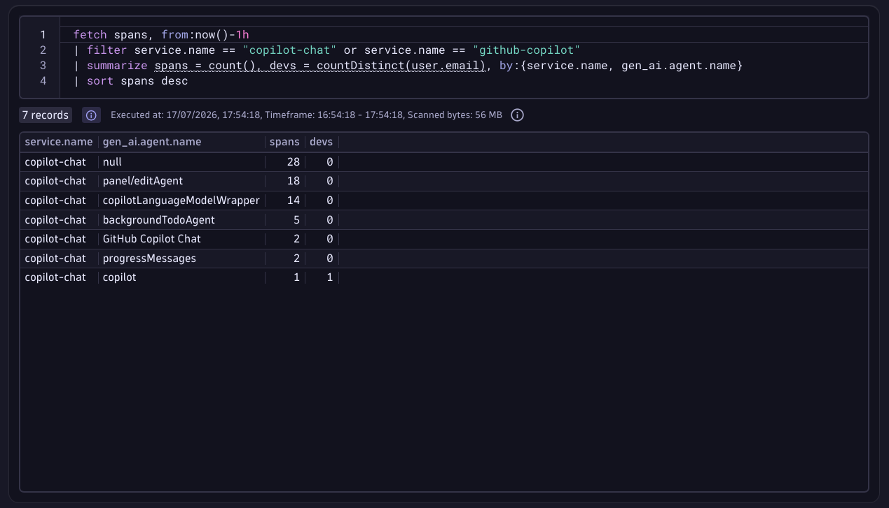
Do lado do dev: Cmd/Ctrl+Shift+P → Developer: Policy Diagnostics. Deve aparecer uma seção mostrando os campos de telemetry.* como policy-enforced.
Trocar temporariamente no user settings do dev:
"github.copilot.chat.otel.exporterType": "console"Os spans passam a aparecer no Output panel do VS Code (canal GitHub Copilot Chat). Se aparecem aqui mas não chegam no Dynatrace, o problema é no envio HTTP.
Depois que os dados estão fluindo, três formas de consumir:
A app da Dynatrace detecta automaticamente serviços LLM. Ao abrir a app AI Observability, o serviço copilot-chat aparece com métricas de LLM requests, tokens, latência e (se habilitado) prompts.
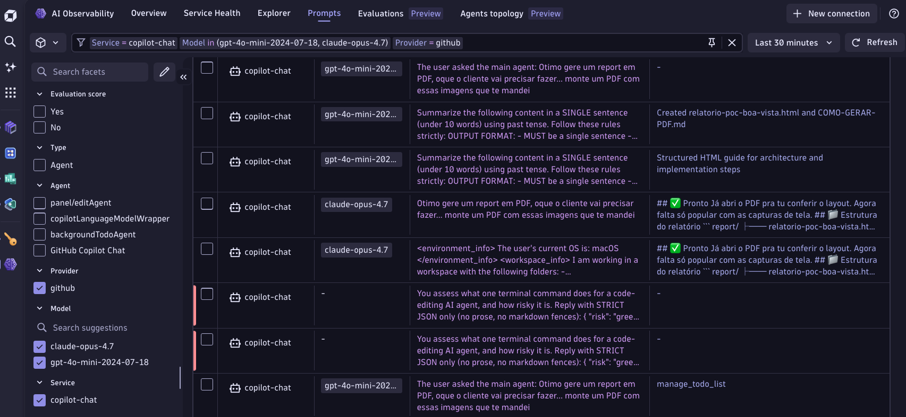
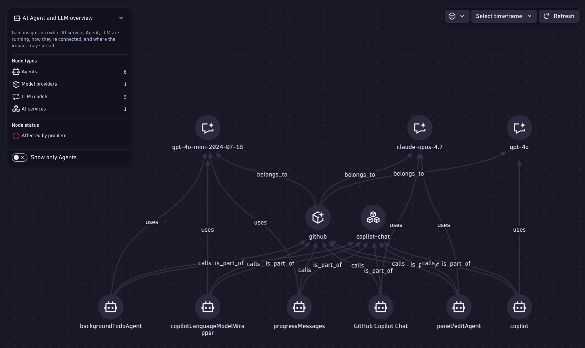
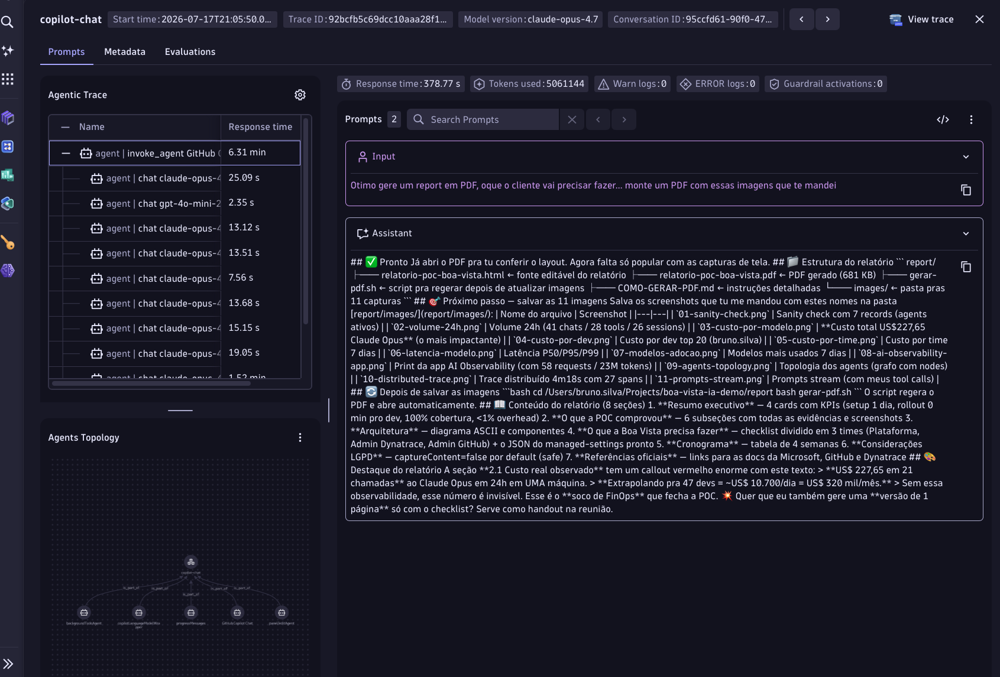
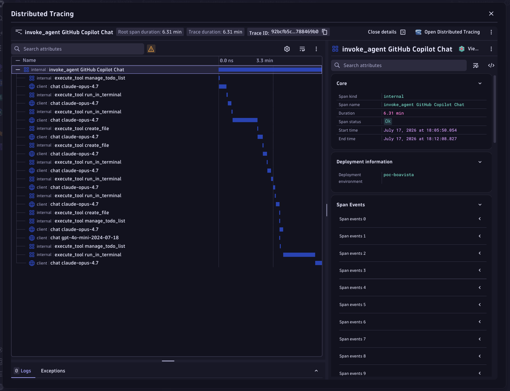
invoke_agent root → múltiplos chat claude-opus-4.7 → múltiplos execute_tool (manage_todo_list, mcp_dynatrace_mcp_verify_dql, create_file, run_in_terminal, memory). Timeline permite ver onde tempo é gasto.Importar dashboards/copilot-chat-observability.json via Ctrl+K → Dashboards → + Dashboard → Upload. Widgets prontos de FinOps, SRE e Adoção.
URL do notebook criado programaticamente durante a POC:
https://fov31014.apps.dynatrace.com/ui/apps/dynatrace.notebooks/notebook/dcceeff0-befc-487d-8a04-b22ceb61d442
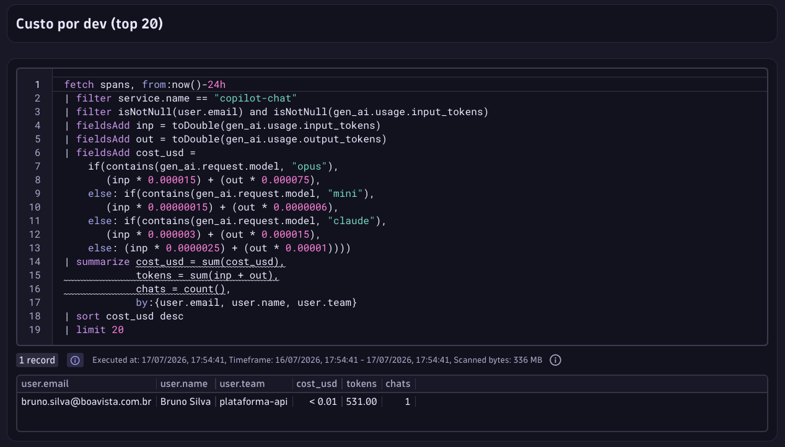
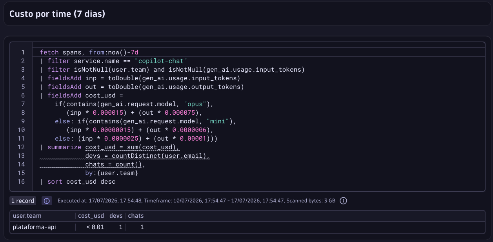
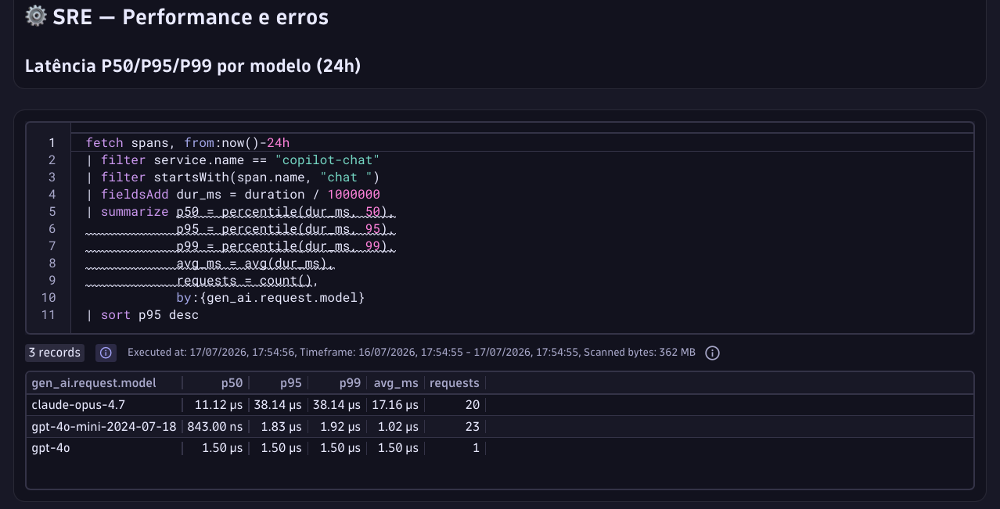
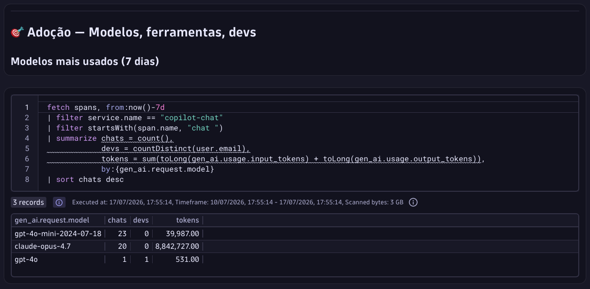
gpt-4o-mini serve 23 chamadas auxiliares por US$<0.01, enquanto claude-opus-4.7 serve 20 chamadas premium consumindo 8.8M tokens. Insight direto de otimização.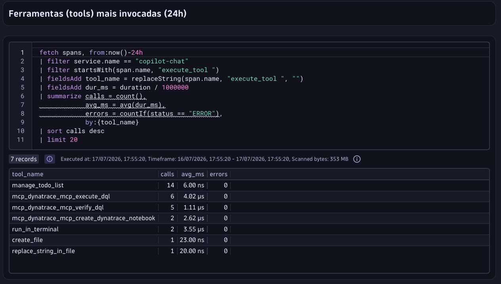
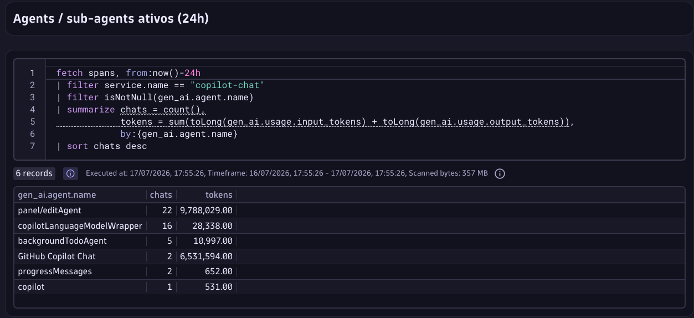
panel/editAgent (modo Agent) consumiu 9.7M tokens em 22 chamadas; GitHub Copilot Chat foreground consumiu 6.5M tokens em 2 chamadas; sub-agents auxiliares (copilotLanguageModelWrapper, progressMessages, backgroundTodoAgent) consumiram <40K tokens combinados. Revela onde o custo real está.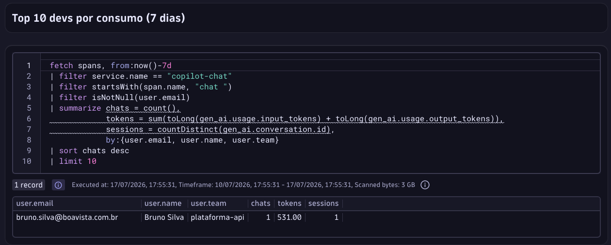
captureContent=true captura texto integral de prompts, respostas, argumentos de ferramentas (inclui caminhos de arquivos e código-fonte lido) e comandos de terminal.
Iniciar a POC e o rollout enterprise com captureContent=false. Cobre 100% dos requisitos formais de FinOps + SRE. A opção de captura de conteúdo pode ser habilitada depois, em subset de devs, se surgir demanda específica de análise de qualidade de prompts, após completar a trilha de aprovação.
| Canal | Como desligar | Tempo |
|---|---|---|
| Server-managed | Comitar {"telemetry":{"enabled":false}} no .github-private/copilot/managed-settings.json | Propaga em até 1h |
| File-based | Remover o arquivo via Ansible/Chef | Próximo reload do VS Code |
| Native MDM | Remover a policy da MDM (Intune/Jamf) | Próximo policy refresh |
| Emergencial (todos) | Parar o OTel Collector — os spans do VS Code começam a dar timeout silenciosamente e são descartados. Nenhum dev vê erro. | Instantâneo |
telemetry.enabled = trueexporterType para "console" e ver spans no Output panelcurl -v http://otel-collector.boavista.corp:4318/v1/traces -H "Content-Type: application/json" -d "{}"COPILOT_OTEL_LOG_LEVEL=debugdocker logs -f bv-otel-collector — procurar HTTP 401 (token inválido), 403 (scope faltando)*.live.dynatrace.com, não *.apps.dynatrace.comopenTelemetryTrace.ingest + metrics.ingestuser.email/user.team vaziosOTEL_RESOURCE_ATTRIBUTES não foi configurado ou o VS Code não herdou a variável do shell (ver Seção 8.3). Alternativa mais robusta: adicionar processor de enrichment no OTel Collector que faz lookup do email do dev contra um CSV/AD/LDAP.
| Semana | Atividade | Responsável |
|---|---|---|
| 1 | Kickoff técnico + criação de tokens Dynatrace + provisionamento do host do collector | Consultor Dynatrace + SRE Boa Vista + Admin Dynatrace |
| 1 | Deploy do collector e validação com 3 devs piloto (configuração manual) | SRE + 3 devs voluntários |
| 2 | Ajustes de coleta + validação dos dashboards + preparação do managed-settings.json | Consultor + Admin GitHub |
| 2 | Publicação no .github-private + rollout para todos os 47 devs | Admin GitHub |
| 3 | Coleta de dados de linha de base + criação de alertas críticos | Consultor + SRE |
| 4 | Apresentação executiva dos resultados (custo real, adoção, ROI) | Todos |
OTEL_RESOURCE_ATTRIBUTES via Intune/Jamf/GPOopenTelemetryTrace.ingest + metrics.ingestcopilot-chat-observability.json.github-privatecopilot/managed-settings.json no branch default